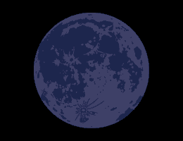

اكتمال القمر في اليوم
Month:
كانون الثاني
شباط
اذار
نيسان
ايار
حزيران
تموز
اب
ايلول
تشرين الاول
تشرين الثاني
كانون الاول
Day:
1
2
3
4
5
6
7
8
9
10
11
12
13
14
15
16
17
18
19
20
21
22
23
24
25
26
27
28
29
30
31
سنة:
AD
BC

اكتمال القمر: